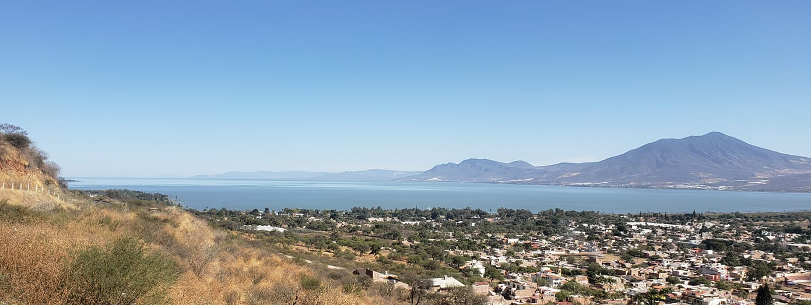
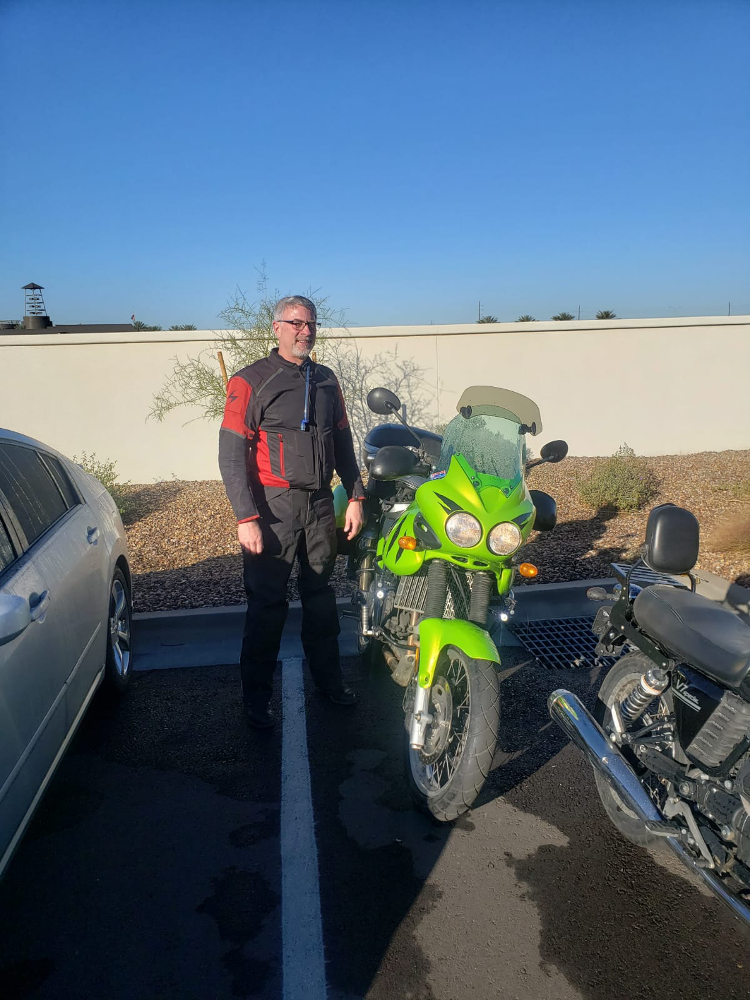
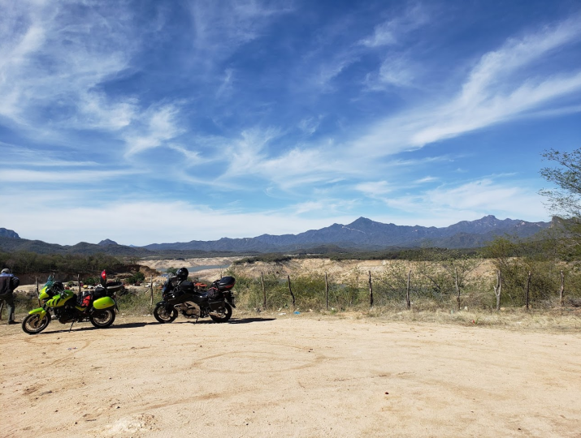
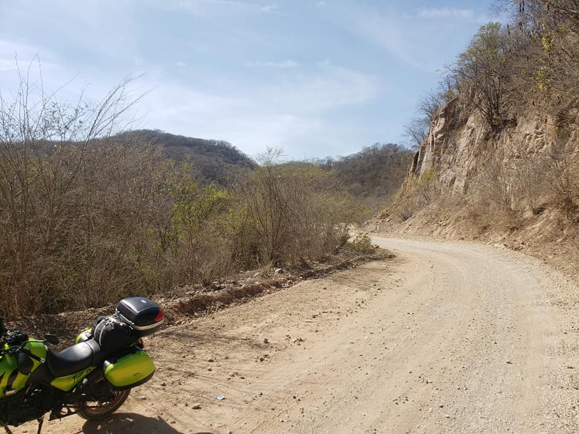
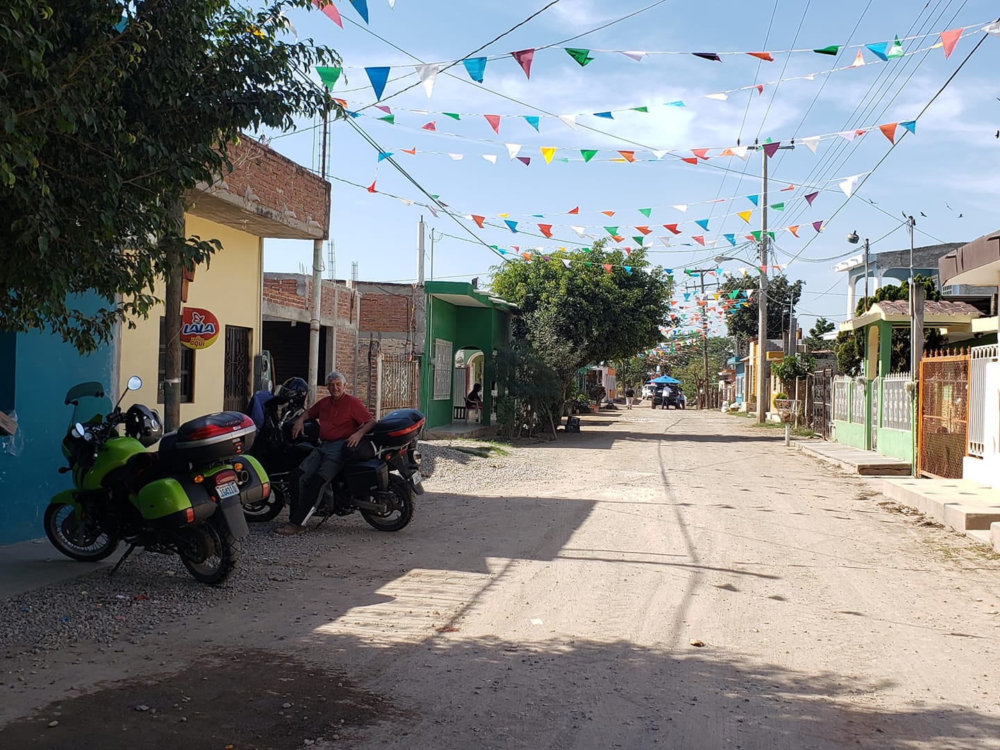

Jan 30, 2021
Departed Chandler Az toward Lukesville/Sonoyta, Mexico. Cold start and a mostly new, to me, bike, a 2002 Triumph Tiger. Uneventful to the border. The crossing was very easy as it is the main route for folks from Phoenix to get to Puerto Penasco, the closest beach to Phoenix. Our vehicle permits, however, were obtained 10 miles down the road to the south. This kept us from checking out the beach. Traveled through Caborca and Magdalena to arrive at Santa Ana for the night. Santa Ana is a noisy crossroads town where two highways come together on the way south. The traffic goes on all night. Stayed at the Hotel Posada, a block off the highway. As towns go, things close pretty early.


Jan 31, 2021
Departed Santa Ana towards the south. Rode Hwy 15 to make some time. The first days are always a push to get to the places we want to see. On the way we met up with 2 couples on Harleys and BMWs who insisted we needed to stop at a place called Tortugas in San Carlos. They escorted us to the front door and even made menu recommendations. Really good fish tacos. Continued south through Obregon, Navajo to El Fuerte. Checked in at the Hotel Herradura. El Fuerte is a tourist town, but feels authentic. It is the birthplace of El Zorro, his family home in town is now a very nice hotel.
Feb 1, 2021
Left El Fuerte east towards the mountains. Passed through Choix to Hutis Dam and back, then on to San Blas, Sinaloa la Leyva to Macavera. Stopped for pictures and came back to a dead battery. Took a bit of work and a new battery( the wrong one) and some creativity to get the bike running. After getting it started, I didn't dare shut off the motor. Took back roads to Guamuchil and found an Auto Zone to purchase the correct battery. Stayed at the Hotel Flores.


Feb 2, 2021
Guamuchil to Culiacan via old Hwy 15. Great road with not too much traffic. A bit of a detour since my GPS has its own ideas. Pretty sure we passed some homes of Cartel bigwigs,wow. From Culiacan east to the Comedero dam. Mostly dirt roads and a bit technical in places. Pavement from the dam to Cosala. Planned to stay in Ceuta beach but there was nothing there so we went back to El Cruce. Stayed downtown at Hotel Korita.
Feb 3, 2021
Downtown El Cruce and the noisiest hotel ever. There was a fitness center across the street from my room and the music was so loud that I got very little sleep. Headed south through Mazatlan until Villa Union where we turned west to the coast. Stopped at a prawn farming operation and were given a tour. We then followed 15 south to Acaponeta, turned west and spent the night in Playa Novillero at the Hotel Pacifico. Very quiet, apparently there is a pandemic or something. Slept amazing.


Feb 4, 2021
Playa Novillero. Foggy morning. Moisture filled my charging ports and I couldn't use them most of the day. GPS took us to the toughest road I have ever had to ride. A steep climb over large rocks. We both dumped our bikes and had to work together to upright them, turn them around and get back out. Took the normal road to Tequila, Jalisco. Spent the night at Hotel Dona Ana.
Stay tuned more updates on my recent travel through Mexico. If you're too excited you can also find me on Facebook where I most almost daily on my travels!